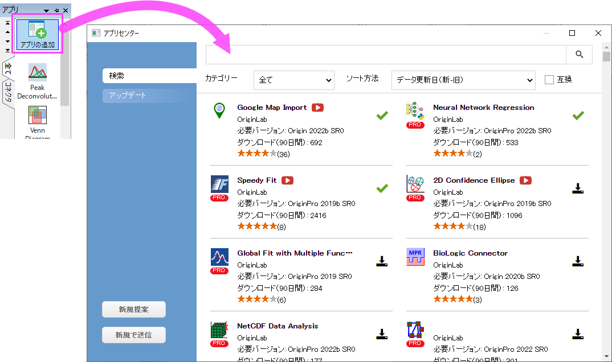
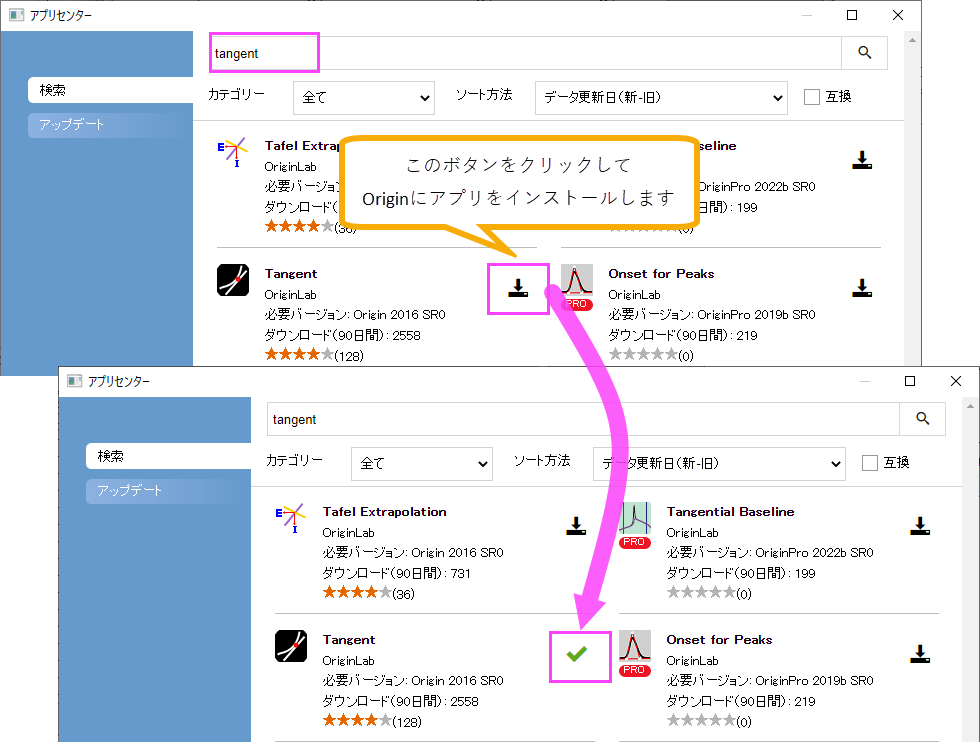
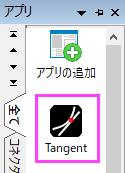
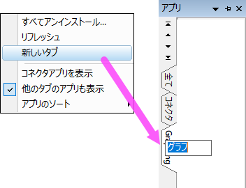
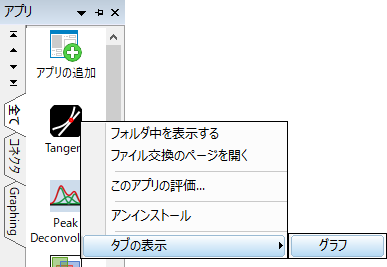
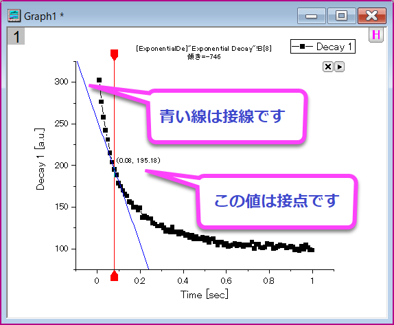

Originアプリ
GSB-apps
Originに標準で搭載されている機能に加え、無料のアプリをインストールすることでグラフ作成と解析機能を拡張できます。
ここでは、アプリの検索方法と、アプリを使って線+シンボルグラフの指定したポイントでの接線をプロットする方法を紹介します。
- F10キーを押してアプリセンターダイアログを開きます。
Note: アプリセンターダイアログは、アプリギャラリーウィンドウのアプリの追加ボタンをクリックすることでも開けます。

- 検索タブを開き、キーワードとしてTangentを入力して、検索アイコンをクリックし、アプリを検索します。download
and installアイコンをクリックします。アプリがインストールされると、download and installアイコンが緑のチェックマーク（Up-to-date
Versionアイコン）に変わります。

| Note: アプリギャラリーからアプリをインストールする方法のほかに、OriginLab社のファイル交換の場ページで希望のアプリをダウンロードし、Originのワークスペース上にopxファイルをドラッグアンドドロップしてインストールすることもできます。詳細はこちらを参照してください。
|
- アプリセンターを閉じます。ワークスペース右側にドックされているアプリギャラリーウィンドウに、Tangentという名前のアイコンが表示されます。

- アプリギャラリーでは、インストールしたアプリを管理するために新しいタブを追加できます。ギャラリーの空白部分で右クリックして、新しいタブを選択すると追加されるので、タブ上でダブルクリックして、「グラフ」という名前に変更します。

- 全てタブに戻り、インストールしたTangentアプリのアイコンを右クリックしてタブの表示：グラフを選択します。このアプリがグラフタブに表示されるようになります。

- 新規ワークブックに、<Origin インストールフォルダ>\Samples\Curve Fitting\Exponential
Decay.datをインポートします。
- 列A、Bを選択してメニューから作図：基本の2Dグラフ：線+シンボルを選択して、グラフを作成します。
- アプリギャラリーのTangentボタンをクリックして、Tangent: addtool_tangentダイアログを開きます。
Note: アプリの起動はアクティブウィンドウの種類に依存します。
- アプリが薄い色（灰色）になっている場合、アプリは、アクティブウィンドウで操作できません。必要なウィンドウタイプをチェックしてください。（アプリギャラリーでアプリのアイコンの上にカーソルを合わせて確認できます。）
- Originのウィンドウタイプ（ワークブック、グラフなど）がアプリの要求と合致してる場合、アプリギャラリーのアプリアイコンをクリックすれば、そのアプリを起動できます。
|
- デフォルトの設定のまま、OK をクリックします。グラフに赤い垂直線と青い接線が表示されます。傾きの値が上部に表示されます。接点は2本の線の交点です。

- 赤いアンカーを希望の位置に移動し、レイヤの右上にある三角形ボタン
 をクリックして新しい出力(O)を選択すると結果を出力できます。同じメニューの設定を選択すると、接線設定ダイアログが開き、スムージングの手法といった設定が可能です。
をクリックして新しい出力(O)を選択すると結果を出力できます。同じメニューの設定を選択すると、接線設定ダイアログが開き、スムージングの手法といった設定が可能です。